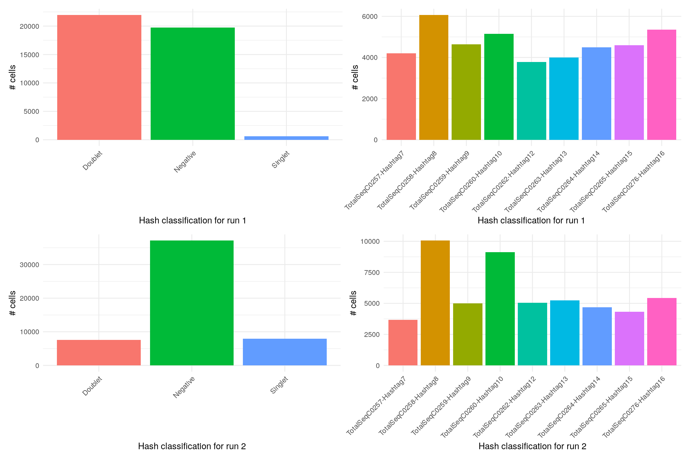
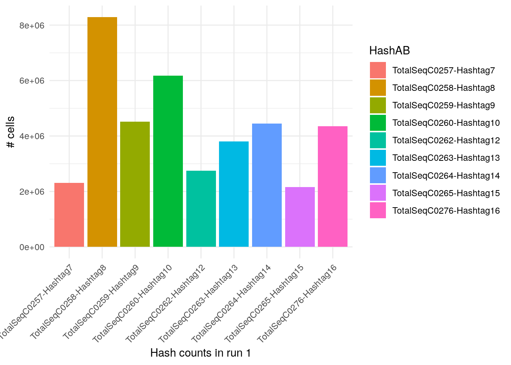
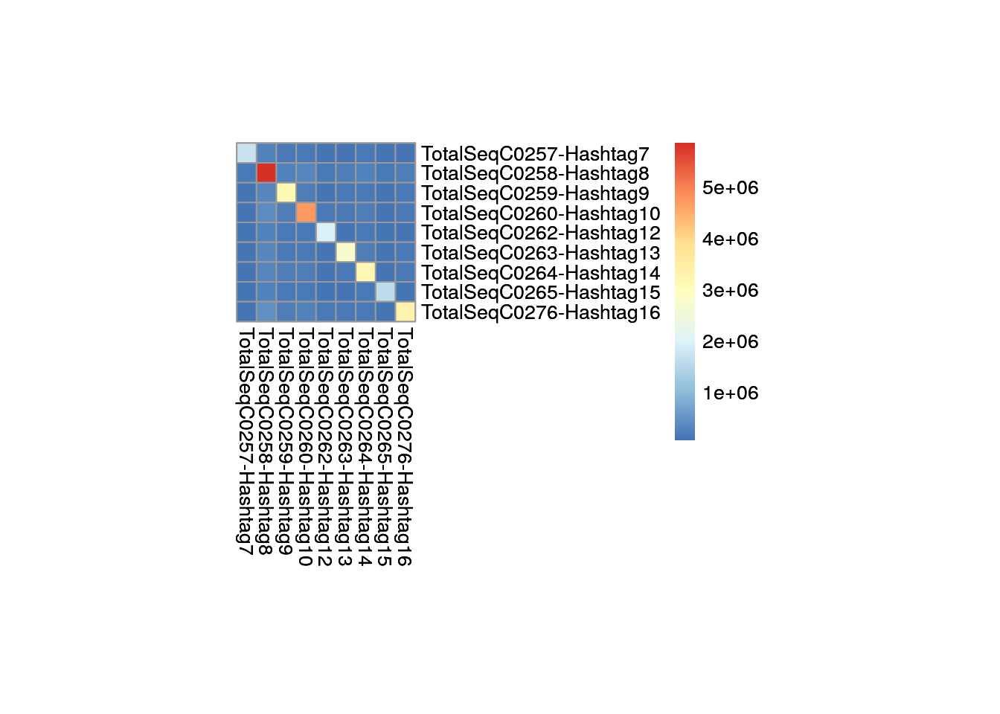
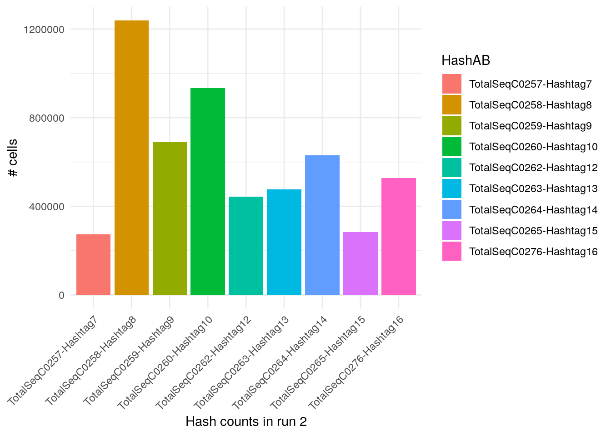
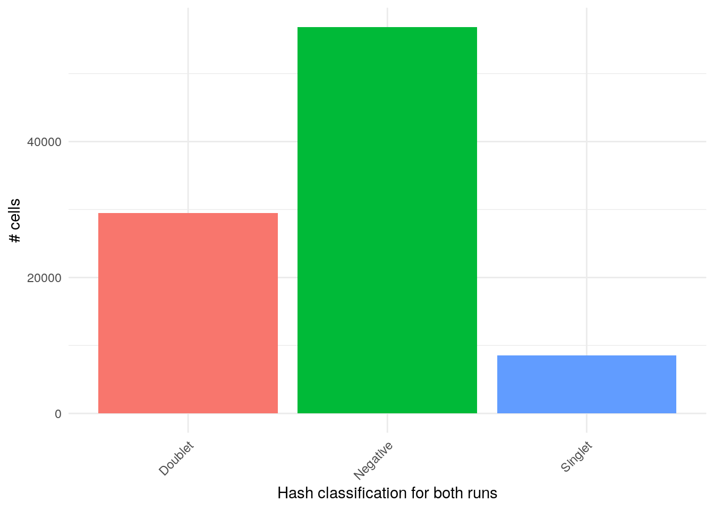
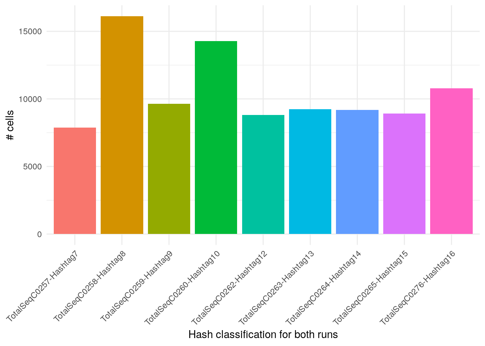
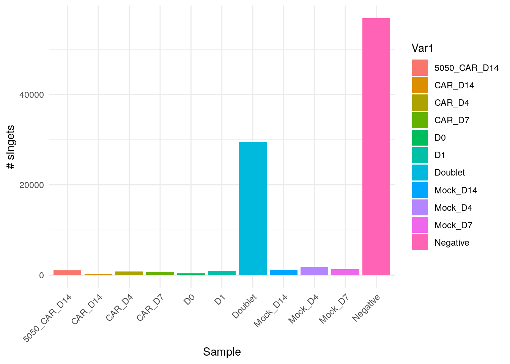
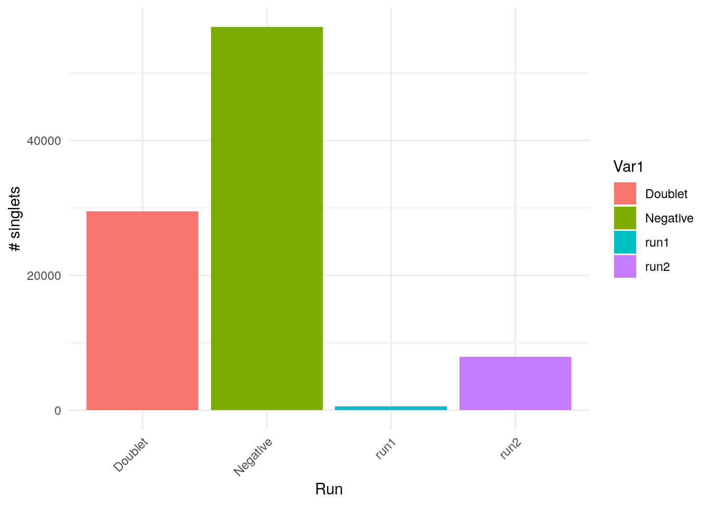
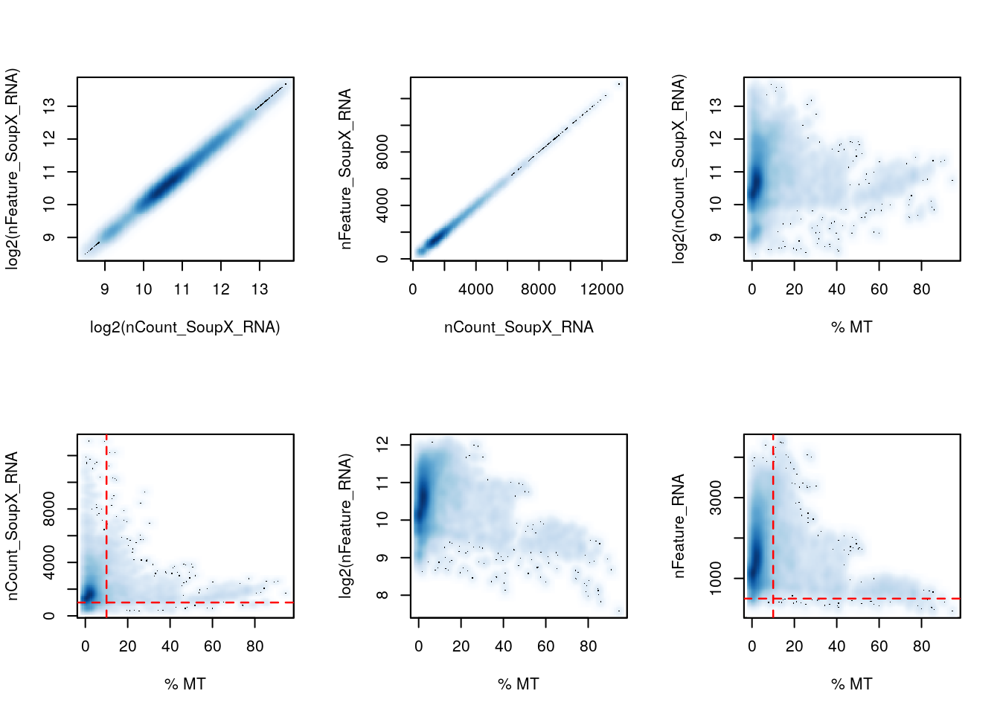

Last updated: 2024-05-30
Checks: 5 2
Knit directory: 19130_CAR_production/
This reproducible R Markdown analysis was created with workflowr (version 1.7.1). The Checks tab describes the reproducibility checks that were applied when the results were created. The Past versions tab lists the development history.
The R Markdown is untracked by Git. To know which version of the R
Markdown file created these results, you’ll want to first commit it to
the Git repo. If you’re still working on the analysis, you can ignore
this warning. When you’re finished, you can run
wflow_publish to commit the R Markdown file and build the
HTML.
Great job! The global environment was empty. Objects defined in the global environment can affect the analysis in your R Markdown file in unknown ways. For reproduciblity it’s best to always run the code in an empty environment.
The command set.seed(20240522) was run prior to running
the code in the R Markdown file. Setting a seed ensures that any results
that rely on randomness, e.g. subsampling or permutations, are
reproducible.
Great job! Recording the operating system, R version, and package versions is critical for reproducibility.
Nice! There were no cached chunks for this analysis, so you can be confident that you successfully produced the results during this run.
Using absolute paths to the files within your workflowr project makes it difficult for you and others to run your code on a different machine. Change the absolute path(s) below to the suggested relative path(s) to make your code more reproducible.
| absolute | relative |
|---|---|
| /home/hnatri/19130_CAR_production/ | . |
Great! You are using Git for version control. Tracking code development and connecting the code version to the results is critical for reproducibility.
The results in this page were generated with repository version 68ac815. See the Past versions tab to see a history of the changes made to the R Markdown and HTML files.
Note that you need to be careful to ensure that all relevant files for
the analysis have been committed to Git prior to generating the results
(you can use wflow_publish or
wflow_git_commit). workflowr only checks the R Markdown
file, but you know if there are other scripts or data files that it
depends on. Below is the status of the Git repository when the results
were generated:
Untracked files:
Untracked: analysis/process_10x.Rmd
Note that any generated files, e.g. HTML, png, CSS, etc., are not included in this status report because it is ok for generated content to have uncommitted changes.
There are no past versions. Publish this analysis with
wflow_publish() to start tracking its development.
library(workflowr)
library(Seurat)
library(googlesheets4)
library(tidyverse)
library(plyr)
library(SoupX)
library(pheatbuilder)
setwd("/home/hnatri/19130_CAR_production/")
set.seed(1234)
options(future.globals.maxSize = 30000 * 1024^2)
reduction <- "umap"
source("/home/hnatri/SingleCellBestPractices/scripts/preprocessing_qc_module.R")The setup is two runs with the same samples:
Run1 (well 3A) F07344-GEX_F07352-CAR_F07348-FB, with a 50-60k pool
load,
Run2 (well 3B) F07345-GEX_F07353-CAR_F07349-FB, with a 90-100k pool
load
# Metadata
# https://docs.google.com/spreadsheets/d/1DstdK4vXjk7ZEeBalW_4CA6Vmd57BGENUx3iMDRLszk/edit?usp=sharing
gs4_deauth()
production_samples <- gs4_get("https://docs.google.com/spreadsheets/d/1DstdK4vXjk7ZEeBalW_4CA6Vmd57BGENUx3iMDRLszk/edit?usp=sharing")
#sheet_names(production_samples)
production_samples <- read_sheet(production_samples, sheet = "Samples")
# Importing data. Two runs with the same samples.
# Concated GEX: /tgen_labs/banovich/SingleCell/CellRanger/7_1_0/Projects/BCTCSF/HT/BCTCSF_0130_1_PB_CONCAT_C1_X5HT2_F07344-F07345_CONCAT
path_list <- list("run1" = unique(production_samples[which(production_samples$Run=="run1"),]$CellRanger_path),
"run2" = unique(production_samples[which(production_samples$Run=="run2"),]$CellRanger_path))
# Cell hashing antibody names
hash_antibodies <- unique(production_samples$Hash_ID)
# Demultiplexing
seurat_list <- prep_seurat_list_multiplexed(metadata = production_samples,
batch_ID = "Run",
cellRanger_path = "CellRanger_path",
cell_ID_prefix = "Sample_Name",
CellHashing_Ab = "Hash_ID",
Hash_Abs = hash_antibodies)Singlets and doublets for each run.
# Singlets/doublets
table(seurat_list[["run1"]]$Hash_classification.global)
Doublet Negative Singlet
21952 19725 603 table(seurat_list[["run2"]]$Hash_classification.global)
Doublet Negative Singlet
7543 37120 7914 p1 <- table(seurat_list[["run1"]]$Hash_classification.global) %>% as.data.frame() %>%
ggplot(aes(x = Var1, y = Freq, fill = Var1)) +
geom_bar(position="dodge", stat="identity") +
theme_minimal() +
theme(axis.text.x = element_text(angle = 45, vjust = 1, hjust=1)) +
xlab("Hash classification for run 1") +
ylab("# cells") +
NoLegend()
p2 <- table(seurat_list[["run1"]]$Hash_maxID) %>% as.data.frame() %>%
ggplot(aes(x = Var1, y = Freq, fill = Var1)) +
geom_bar(position="dodge", stat="identity") +
theme_minimal() +
theme(axis.text.x = element_text(angle = 45, vjust = 1, hjust=1)) +
xlab("Hash classification for run 1") +
ylab("# cells") +
NoLegend()
p3 <- table(seurat_list[["run2"]]$Hash_classification.global) %>% as.data.frame() %>%
ggplot(aes(x = Var1, y = Freq, fill = Var1)) +
geom_bar(position="dodge", stat="identity") +
theme_minimal() +
theme(axis.text.x = element_text(angle = 45, vjust = 1, hjust=1)) +
xlab("Hash classification for run 2") +
ylab("# cells") +
NoLegend()
p4 <- table(seurat_list[["run2"]]$Hash_maxID) %>% as.data.frame() %>%
ggplot(aes(x = Var1, y = Freq, fill = Var1)) +
geom_bar(position="dodge", stat="identity") +
theme_minimal() +
theme(axis.text.x = element_text(angle = 45, vjust = 1, hjust=1)) +
xlab("Hash classification for run 2") +
ylab("# cells") +
NoLegend()
(p1 + p2) / (p3 + p4)
Plotting HTO counts.
# Plotting HTO counts
hash_counts <- lapply(seurat_list, function(xx){
hash <- LayerData(xx, assay = "Hash", layer = "counts")
hash <- as.data.frame(t(hash))
hash$hash_classification <- mapvalues(rownames(hash),
from = rownames(xx@meta.data),
to = xx@meta.data$Hash_maxID)
hash
})
hash_antibodies <- gsub("_", "-", hash_antibodies)Run 1
hash_counts[[1]] %>% pivot_longer(cols = hash_antibodies,
values_to = "counts",
names_to = "HashAB") %>%
group_by(HashAB) %>%
dplyr::summarize(sum = sum(counts)) %>%
ungroup() %>%
ggplot(aes(x = HashAB, y = sum, fill = HashAB)) +
geom_bar(position="dodge", stat="identity") +
theme_minimal() +
theme(axis.text.x = element_text(angle = 45, vjust = 1, hjust=1)) +
xlab("Hash counts in run 1") +
ylab("# cells")
hash_counts[[1]] %>% pivot_longer(cols = hash_antibodies,
values_to = "counts",
names_to = "HashAB") %>%
group_by(hash_classification, HashAB) %>%
dplyr::summarize(sum = sum(counts)) %>%
ungroup() %>%
pivot_wider(values_from = sum,
names_from = HashAB) %>%
pheat()
Run 2
hash_counts[[2]] %>% pivot_longer(cols = hash_antibodies,
values_to = "counts",
names_to = "HashAB") %>%
group_by(HashAB) %>%
dplyr::summarize(sum = sum(counts)) %>%
ungroup() %>%
ggplot(aes(x = HashAB, y = sum, fill = HashAB)) +
geom_bar(position="dodge", stat="identity") +
theme_minimal() +
theme(axis.text.x = element_text(angle = 45, vjust = 1, hjust=1)) +
xlab("Hash counts in run 2") +
ylab("# cells")
hash_counts[[2]] %>% pivot_longer(cols = hash_antibodies,
values_to = "counts",
names_to = "HashAB") %>%
group_by(hash_classification, HashAB) %>%
dplyr::summarize(sum = sum(counts)) %>%
ungroup() %>%
pivot_wider(values_from = sum,
names_from = HashAB) %>%
pheat()Singlets and doublets in the combined data.
# Merging for plotting
seurat_merged <- merge(x = seurat_list[[1]], y = seurat_list[[2]])
# Singlets/doublets
table(seurat_merged$Hash_classification.global) %>% as.data.frame() %>%
ggplot(aes(x = Var1, y = Freq, fill = Var1)) +
geom_bar(position="dodge", stat="identity") +
theme_minimal() +
theme(axis.text.x = element_text(angle = 45, vjust = 1, hjust=1)) +
xlab("Hash classification for both runs") +
ylab("# cells") +
NoLegend()
table(seurat_merged$Hash_maxID) %>% as.data.frame() %>%
ggplot(aes(x = Var1, y = Freq, fill = Var1)) +
geom_bar(position="dodge", stat="identity") +
theme_minimal() +
theme(axis.text.x = element_text(angle = 45, vjust = 1, hjust=1)) +
xlab("Hash classification for both runs") +
ylab("# cells") +
NoLegend()
seurat_list <- lapply(seurat_list, function(xx){
xx@meta.data$cellname <- colnames(xx)
xx
})Filtering to retain singlets
# Filtering to retain singlets
seurat_singlets_list <- lapply(seurat_list, function(xx){
xx <- subset(xx, subset = Hash_classification.global == "Singlet")
xx
})
names(seurat_singlets_list) <- names(seurat_list)
# Merging for plotting
seurat_merged <- merge(x = seurat_list[[1]], y = seurat_list[[2]])
# Plotting
table(seurat_merged$Sample_Name) %>% as.data.frame() %>%
ggplot(aes(x = Var1, y = Freq, fill = Var1)) +
geom_bar(position="dodge", stat="identity") +
theme_minimal() +
theme(axis.text.x = element_text(angle = 45, vjust = 1, hjust=1)) +
xlab("Sample") +
ylab("# singets")
table(seurat_merged$Run) %>% as.data.frame() %>%
ggplot(aes(x = Var1, y = Freq, fill = Var1)) +
geom_bar(position="dodge", stat="identity") +
theme_minimal() +
theme(axis.text.x = element_text(angle = 45, vjust = 1, hjust=1)) +
xlab("Run") +
ylab("# singlets")
# Saving demultiplexed data in 10x format
for (i in 1:length(seurat_singlets_list)){
print(paste0("Converting sample ", names(seurat_singlets_list[i])))
obj.sub <- seurat_singlets_list[[i]]
counts <- LayerData(obj.sub, assay = "RNA", layer = "counts")
DropletUtils::write10xCounts(path = paste0("/scratch/hnatri/CART/SoupX/demultiplexed_", names(seurat_singlets_list[i])),
x = counts,
barcodes = colnames(counts), # cell names
gene.id = rownames(counts), # Gene identifiers, one per row of X
type = "sparse", version="3", overwrite = T)
}[1] "Converting sample run1"
[1] "Converting sample run2"# Running SoupX
seurat_soupx_list <- sapply(names(seurat_singlets_list), function(xx){
print(xx)
# Read in count and droplet data
# Converted demultiplexed counts
message("Reading converted demultiplexed counts")
d10x_toc <- Read10X(paste0("/scratch/hnatri/CART/SoupX/demultiplexed_", xx))
#batch_id <- seurat_singlets_list[[xx]]$Run
# Need to read in batch specific empty droplet file
message("Reading empty droplet data")
d10x_tod <- Read10X(paste0(path_list[[xx]], "/outs/raw_feature_bc_matrix/"))
if(length(names(d10x_tod))>1){
d10x_tod_gex <- d10x_tod[[1]]
} else {
d10x_tod_gex <- d10x_tod
}
colnames(d10x_tod_gex) <- paste0(xx, "_", colnames(d10x_tod_gex))
# Some batches only have features that are expressed in at least one cell;
# need to fix feature order
#rownames(d10x_toc) <- gsub("_", "-", rownames(d10x_toc))
#rownames(d10x_tod_gex) <- gsub("_", "-", rownames(d10x_tod_gex))
d10x_tod_gex <- d10x_tod_gex[rownames(d10x_toc),]
# Run SoupX
sc <- SoupChannel(d10x_tod_gex, d10x_toc, calcSoupProfile = FALSE)
sc <- estimateSoup(sc)
toc_seu <- CreateSeuratObject(d10x_toc)
toc_seu <- SCTransform(toc_seu, vst.flavor = "v2")
if(ncol(toc_seu)<50){
toc_seu <- RunPCA(toc_seu, npcs = ncol(toc_seu)-1)
} else{
toc_seu <- RunPCA(toc_seu)
}
toc_seu <- RunUMAP(toc_seu, dims = 1:15)
toc_seu <- FindNeighbors(toc_seu, dims = 1:15)
toc_seu <- FindClusters(toc_seu, resolution = 1)
# Add meta data to soupX object
sc <- setClusters(sc, setNames(toc_seu$seurat_clusters, rownames(toc_seu@meta.data)))
# Estimate contamination (automated method)
message(paste0("Getting autoEstCont for: ", i))
sc <- autoEstCont(sc, tfidfMin = 0.6, soupQuantile = 0.7, forceAccept = TRUE, doPlot = F)
out <- adjustCounts(sc)
# Create Seurat object using corrected data
d10x_seu <- CreateSeuratObject(out, assay = "SoupX_RNA")
d10x_seu[["RNA"]] <- toc_seu@assays[["RNA"]]
d10x_seu <- PercentageFeatureSet(d10x_seu, pattern = "^MT-", col.name = "percent.mt_RNA", assay = "RNA")
d10x_seu <- PercentageFeatureSet(d10x_seu, pattern = "^RP[SL]|^MRP[SL]", col.name = "percent.ribo_RNA", assay = "RNA")
d10x_seu <- PercentageFeatureSet(d10x_seu, pattern = "^MT-", col.name = "percent.mt_SoupX_RNA", assay = "SoupX_RNA")
d10x_seu <- PercentageFeatureSet(d10x_seu, pattern = "^RP[SL]|^MRP[SL]", col.name = "percent.ribo_SoupX_RNA", assay = "SoupX_RNA")
# Add sample metadata
d10x_seu$Sample <- paste0(sapply(strsplit(colnames(d10x_seu), "_"), `[`, 1), "_",
sapply(strsplit(colnames(d10x_seu), "_"), `[`, 2))
d10x_seu$Day <-paste0(sapply(strsplit(colnames(d10x_seu), "_"), `[`, 2))
d10x_seu$Sample_Type <- paste0(sapply(strsplit(colnames(d10x_seu), "_"), `[`, 1))
d10x_seu$cellname <- colnames(d10x_seu)
d10x_seu$Run <- xx
d10x_seu <- RenameCells(d10x_seu,
new.names = paste0(xx,"_", colnames(d10x_seu)))
d10x_seu
})[1] "run1"
Modularity Optimizer version 1.3.0 by Ludo Waltman and Nees Jan van Eck
Number of nodes: 603
Number of edges: 23686
Running Louvain algorithm...
Maximum modularity in 10 random starts: 0.6416
Number of communities: 7
Elapsed time: 0 seconds
[1] "run2"
Modularity Optimizer version 1.3.0 by Ludo Waltman and Nees Jan van Eck
Number of nodes: 7914
Number of edges: 262762
Running Louvain algorithm...
Maximum modularity in 10 random starts: 0.8566
Number of communities: 19
Elapsed time: 0 secondsnames(seurat_soupx_list) <- names(seurat_singlets_list)
# Merge
seurat_merged <- merge(x = seurat_soupx_list[[1]], y = seurat_soupx_list[[2]])
#saveRDS(seurat_merged, "/scratch/hnatri/CART/SoupX/seurat_merged.rds")par(mfrow=c(2,3))
# PLOTS 1 & 2: nCount vs. nFeature
smoothScatter(log2(seurat_merged$nCount_SoupX_RNA), log2(seurat_merged$nCount_SoupX_RNA),
xlab = "log2(nCount_SoupX_RNA)", ylab = "log2(nFeature_SoupX_RNA)")
smoothScatter(seurat_merged$nCount_SoupX_RNA, seurat_merged$nCount_SoupX_RNA,
xlab = "nCount_SoupX_RNA", ylab = "nFeature_SoupX_RNA")
# PLOTS 3 & 4: nCount vs. percent.mt_RNA
smoothScatter(seurat_merged$percent.mt_SoupX_RNA, log2(seurat_merged$nCount_SoupX_RNA),
xlab = "% MT", ylab = "log2(nCount_SoupX_RNA)")
smoothScatter(seurat_merged$percent.mt_SoupX_RNA, seurat_merged$nCount_SoupX_RNA,
xlab = "% MT", ylab = "nCount_SoupX_RNA")
abline(v = 10, h = 1000,
lty = "dashed", lwd = 1.25, col = "red")
# PLOTS 5 & 6: nFeature vs. percent.mt_RNA
smoothScatter(seurat_merged$percent.mt_SoupX_RNA, log2(seurat_merged$nFeature_SoupX_RNA),
xlab = "% MT", ylab = "log2(nFeature_RNA)")
smoothScatter(seurat_merged$percent.mt_SoupX_RNA, seurat_merged$nFeature_SoupX_RNA,
xlab = "% MT", ylab = "nFeature_RNA")
abline(v = 10, h = 500,
lty = "dashed", lwd = 1.25, col = "red")
seurat_filtered <- subset(seurat_merged, subset = percent.mt_SoupX_RNA < 10 &
nFeature_SoupX_RNA > 500 & nCount_SoupX_RNA >1000)
saveRDS(seurat_filtered, "/scratch/hnatri/CART/19130_CARprod_filtered.rds")
sessionInfo()R version 4.3.0 (2023-04-21)
Platform: x86_64-pc-linux-gnu (64-bit)
Running under: Ubuntu 22.04.3 LTS
Matrix products: default
BLAS: /usr/lib/x86_64-linux-gnu/openblas-pthread/libblas.so.3
LAPACK: /usr/lib/x86_64-linux-gnu/openblas-pthread/libopenblasp-r0.3.20.so; LAPACK version 3.10.0
locale:
[1] LC_CTYPE=en_US.UTF-8 LC_NUMERIC=C
[3] LC_TIME=en_US.UTF-8 LC_COLLATE=en_US.UTF-8
[5] LC_MONETARY=en_US.UTF-8 LC_MESSAGES=en_US.UTF-8
[7] LC_PAPER=en_US.UTF-8 LC_NAME=C
[9] LC_ADDRESS=C LC_TELEPHONE=C
[11] LC_MEASUREMENT=en_US.UTF-8 LC_IDENTIFICATION=C
time zone: Etc/UTC
tzcode source: system (glibc)
attached base packages:
[1] stats4 stats graphics grDevices utils datasets methods
[8] base
other attached packages:
[1] scDblFinder_1.16.0 DoubletFinder_2.0.3
[3] scater_1.30.1 scuttle_1.12.0
[5] SingleCellExperiment_1.24.0 SummarizedExperiment_1.32.0
[7] Biobase_2.62.0 GenomicRanges_1.54.1
[9] GenomeInfoDb_1.38.8 IRanges_2.36.0
[11] S4Vectors_0.40.2 BiocGenerics_0.48.1
[13] MatrixGenerics_1.14.0 matrixStats_1.0.0
[15] pheatbuilder_0.1.0 SoupX_1.6.2
[17] plyr_1.8.8 lubridate_1.9.2
[19] forcats_1.0.0 stringr_1.5.0
[21] dplyr_1.1.2 purrr_1.0.2
[23] readr_2.1.4 tidyr_1.3.0
[25] tibble_3.2.1 ggplot2_3.4.2
[27] tidyverse_2.0.0 googlesheets4_1.1.0
[29] Seurat_5.0.1 SeuratObject_5.0.1
[31] sp_1.6-1 workflowr_1.7.1
loaded via a namespace (and not attached):
[1] fs_1.6.2 spatstat.sparse_3.0-1
[3] bitops_1.0-7 httr_1.4.6
[5] RColorBrewer_1.1-3 tools_4.3.0
[7] sctransform_0.4.1 utf8_1.2.3
[9] R6_2.5.1 HDF5Array_1.30.1
[11] lazyeval_0.2.2 uwot_0.1.14
[13] rhdf5filters_1.14.1 withr_2.5.0
[15] gridExtra_2.3 progressr_0.13.0
[17] cli_3.6.1 spatstat.explore_3.2-1
[19] fastDummies_1.7.3 labeling_0.4.2
[21] sass_0.4.6 spatstat.data_3.0-1
[23] ggridges_0.5.4 pbapply_1.7-0
[25] Rsamtools_2.18.0 R.utils_2.12.2
[27] parallelly_1.36.0 limma_3.58.1
[29] rstudioapi_0.14 generics_0.1.3
[31] BiocIO_1.12.0 ica_1.0-3
[33] spatstat.random_3.1-5 Matrix_1.6-5
[35] ggbeeswarm_0.7.2 fansi_1.0.4
[37] abind_1.4-5 R.methodsS3_1.8.2
[39] lifecycle_1.0.3 whisker_0.4.1
[41] yaml_2.3.7 edgeR_4.0.16
[43] glmGamPoi_1.14.3 rhdf5_2.46.1
[45] SparseArray_1.2.4 Rtsne_0.16
[47] grid_4.3.0 promises_1.2.0.1
[49] dqrng_0.3.0 crayon_1.5.2
[51] miniUI_0.1.1.1 lattice_0.21-8
[53] beachmat_2.18.1 cowplot_1.1.1
[55] metapod_1.10.1 pillar_1.9.0
[57] knitr_1.43 rjson_0.2.21
[59] xgboost_1.7.5.1 future.apply_1.11.0
[61] codetools_0.2-19 leiden_0.4.3
[63] glue_1.6.2 getPass_0.2-4
[65] data.table_1.14.8 vctrs_0.6.5
[67] png_0.1-8 spam_2.9-1
[69] cellranger_1.1.0 gtable_0.3.3
[71] cachem_1.0.8 xfun_0.39
[73] DropletUtils_1.22.0 S4Arrays_1.2.1
[75] mime_0.12 survival_3.5-5
[77] gargle_1.4.0 pheatmap_1.0.12
[79] statmod_1.5.0 bluster_1.12.0
[81] ellipsis_0.3.2 fitdistrplus_1.1-11
[83] ROCR_1.0-11 nlme_3.1-162
[85] RcppAnnoy_0.0.20 rprojroot_2.0.3
[87] bslib_0.4.2 irlba_2.3.5.1
[89] vipor_0.4.5 KernSmooth_2.23-21
[91] colorspace_2.1-0 tidyselect_1.2.0
[93] processx_3.8.1 curl_5.0.1
[95] compiler_4.3.0 git2r_0.32.0
[97] BiocNeighbors_1.20.2 DelayedArray_0.28.0
[99] plotly_4.10.2 rtracklayer_1.62.0
[101] scales_1.2.1 lmtest_0.9-40
[103] callr_3.7.3 digest_0.6.31
[105] goftest_1.2-3 spatstat.utils_3.0-3
[107] rmarkdown_2.22 XVector_0.42.0
[109] htmltools_0.5.5 pkgconfig_2.0.3
[111] sparseMatrixStats_1.14.0 highr_0.10
[113] fastmap_1.1.1 rlang_1.1.1
[115] htmlwidgets_1.6.2 shiny_1.7.4
[117] DelayedMatrixStats_1.24.0 farver_2.1.1
[119] jquerylib_0.1.4 zoo_1.8-12
[121] jsonlite_1.8.5 BiocParallel_1.36.0
[123] R.oo_1.25.0 BiocSingular_1.18.0
[125] RCurl_1.98-1.12 magrittr_2.0.3
[127] GenomeInfoDbData_1.2.11 dotCall64_1.0-2
[129] patchwork_1.1.2 Rhdf5lib_1.24.1
[131] munsell_0.5.0 Rcpp_1.0.10
[133] viridis_0.6.3 reticulate_1.29
[135] stringi_1.7.12 zlibbioc_1.48.0
[137] MASS_7.3-60 parallel_4.3.0
[139] listenv_0.9.0 ggrepel_0.9.3
[141] deldir_1.0-9 Biostrings_2.70.3
[143] splines_4.3.0 tensor_1.5
[145] hms_1.1.3 locfit_1.5-9.8
[147] ps_1.7.5 igraph_1.4.3
[149] spatstat.geom_3.2-1 RcppHNSW_0.5.0
[151] reshape2_1.4.4 ScaledMatrix_1.10.0
[153] XML_3.99-0.14 evaluate_0.21
[155] scran_1.30.2 tzdb_0.4.0
[157] httpuv_1.6.11 RANN_2.6.1
[159] polyclip_1.10-4 future_1.32.0
[161] scattermore_1.2 rsvd_1.0.5
[163] xtable_1.8-4 restfulr_0.0.15
[165] RSpectra_0.16-1 later_1.3.1
[167] viridisLite_0.4.2 googledrive_2.1.0
[169] beeswarm_0.4.0 GenomicAlignments_1.38.2
[171] cluster_2.1.4 timechange_0.2.0
[173] globals_0.16.2